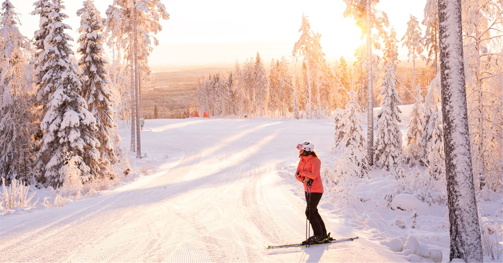
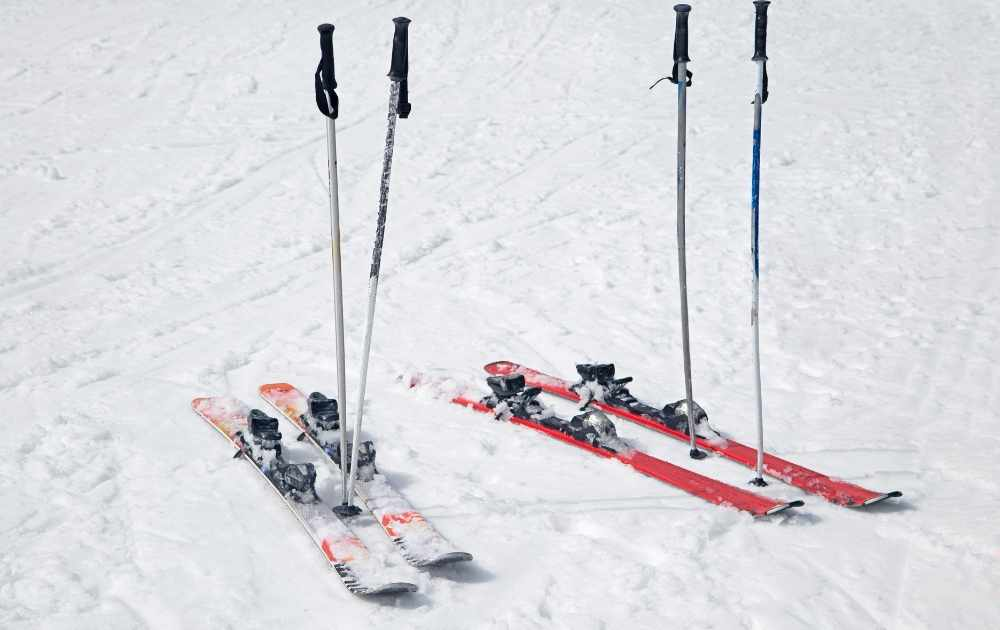

Min hobby- Skidåkning
Skidåkning är min favorit aktivitet att göra på vintern. Jag åker framförallt skidor i Tandådalen, Sälen.
Slalom


Tabell
| Skidort | Land | Nedfarter | Längsta nedfart |
|---|---|---|---|
| Trysil | Norge | 69st | 5,4km |
| Åre | Sverige | 89st | 6,5km |
Läs mer om skidåkning i Åre här:
Skistar Åre